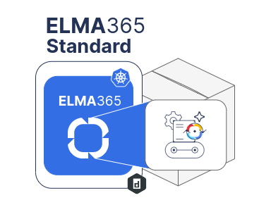
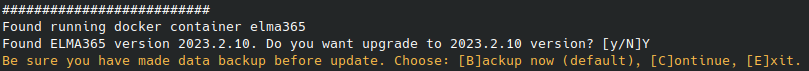
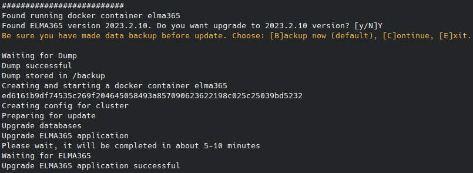

During the operation of BRIX Standard (KinD), you may need to reconfigure the application components, for example, to edit the settings of services — modify the mail server settings, change the application connection parameters, configure additional options, etc.
The process of changing the application's parameters consists of two stages:
- Making changes to the config-elma365.txt configuration file.
- Running the installation script with the --upgrade key to apply the new parameters.

Parameters of the config-elma365.txt configuration file
The config-elma365.txt configuration file is created in the current directory the first time the installation script is run.
The parameters in the config-elma365.txt configuration file are divided into two groups:
- Basic. Parameters that are minimally required for the quick deployment of the BRIX Standard app in Kubernetes-in-Docker (KinD).
- Additional. Parameters describing the interaction of BRIX Standard (KinD) with external data storage systems, modes, and protocols of the app's operation.
начало внимание
Careless modification of additional parameters in the config-elma365.txt configuration file can lead to the BRIX Standard app (KinD) becoming inoperative. Before making changes to this file, it is recommended to create a backup copy.
конец внимание
Description of the config-elma365.txt file parameters
Name |
Description |
Main installation parameters |
|
|
IP or URL address through which the system will be accessible. When setting up the system with a specified domain name, it is necessary to add the corresponding A record in the DNS server: Please note that the name is written in lowercase letters. Important: if it is impossible to configure domain name resolution, it is necessary to enable the additional installation parameter |
Login credentials for supervisor: |
|
|
The email address is specified, which will serve as the login for the supervisor. Important: the parameter is used when creating a company during the installation of BRIX to create a new account for the supervisor. Changing the supervisor’s email by modifying this parameter will be further impossible. |
|
Password for main administrator. Important: it is used when the company is created at the moment BRIX is installed. |
System interface language: |
|
|
Interface language. Available options: |
System edition: |
|
|
Available options: In this package, the |
Setting connection with SMTP (this connection is used to send invitations to new users, restore passwords, and send notifications about new tasks): |
|
|
IP or URL for connecting to SMTP server. |
|
Port for connecting to SMTP server. |
|
Email address (name of the email) on behalf of which the messages will be sent. |
|
User login for connecting to SMTP server. |
|
User password for connecting to SMTP server. |
|
Using TLS encryption by SMTP server. Available option: |
Setting TLS encryption: |
|
|
Path to the SSL certificate (to enable HTTPS support). The SSL certificate must be fullchain. Important: If the |
|
Path to the private key (to enable HTTPS support). Important: If the |
|
Path to the root CA certificate when using a self-signed certificate. Important: If the |
Setting connection to external databases: |
|
|
PostgreSQL connection string for both read and write operations. Format:
For the required PostgreSQL configuration, refer to the Prepare external databases section. |
|
PostgreSQL connection string for writing operations. Format:
For the required PostgreSQL configuration, refer to the Prepare external databases section. |
|
MongoDB connection string. Format:
For the required MongoDB configuration, refer to the Prepare external databases section. |
|
Redis connection string. Format:
For the required Redis configuration, refer to the Prepare external databases section. |
|
RabbitMQ connection string. Format:
For the required RabbitMQ configuration, refer to the Prepare external databases section. |
Setting connection to S3 file storage: |
|
|
S3 connection string. Format:
For the required S3 configuration, refer to the Prepare external databases section. |
|
Bucket name in S3. Important: If the proxy connection parameter to the external S3, |
|
User login for connecting to the S3 server. |
|
User password for connecting to the S3 server. |
|
S3 server location region. |
|
Method for uploading files to S3. Available options: |
|
Use of TLS encryption by the S3 server. Available options: |
|
Enabling Virtual-hosted style mode for S3. In this ode, the name of the bucket is part of the domain name in a URL, for example: If the parameter is disabled, the Path‑style address model is used. Default value: Available options: |
|
Enabling proxy connection to an external S3 (if the S3 server is isolated in a local network). Available options: Important: to proxy a connection to an external S3, the connection parameters to the S3 server must be filled in:
|
|
S3 server address for creating a backup copy. Format:
|
Setting up directories for system installation and creating backups: |
|
|
Path to the directory where the BRIX Standard (KinD) system will be installed. Default value: Important: If installing the Docker App via Snap, the installation directory path should be changed to Example: |
|
Path to the directory where backup copies of the BRIX Standard (KinD) system will be saved Default value: Important: If installing the Docker App via Snap, the installation directory path should be changed to Example: |
Settings for a private Docker image repository: |
|
|
Address of the private Docker image repository. Format: |
|
User login and password for accessing the private registry.
Format: |
|
Enabling the creation of a local private repository. Important: when enabling a local private repository, specify the IP of the machine with BRIX and the port in parameter Available options: |
|
Port for connecting to the local Docker image repository. Default value: |
|
Directory location of the local Docker image repository. Default value: Important: If the Docker app is installed via Snap, the path to the directory of the local Docker image repository should be changed to Example: |
Docker settings: |
|
|
Settings for changing the 172.17.0.0/16 subnet used in Docker by default. Specify a range of IP addresses.
Format example: |
|
Important: when specifying a subnet in the |
|
MTU settings for Docker. |
Mapping ports to database in docker: |
|
|
Mapping a local port to the Postgres DB pod port, the local port number is specified. |
|
Mapping a local port to the MongoDB DB pod port, the local port number is specified. |
|
Mapping a local port to the Web port in the RabbitMQ DB pod, the local port number is specified. |
|
Mapping a local port to the Redis DB pod port, the local port number is specified. |
|
Mapping a local port to the Web port in the MinIO S3 data storage pod, the local port number is specified. |
Setting connection of BRIX to a proxy server: |
|
|
Connection URL to the proxy server for the https protocol. Format: Where:
|
|
Connection URL to the proxy server for the http protocol. Format: Where:
|
|
Network addresses, ranges of network addresses, and domains that should be excluded from using the proxy are specified. Default value: |
|
Connection URL to the proxy server for the https protocol. Format: Where:
|
|
Connection URL to the proxy server for the http protocol. Format: Where:
|
|
Network addresses, ranges of network addresses, and domains that should be excluded from using the proxy are specified. Default value: |
Parameters with no group: |
|
|
Sets the HOSTALIASES for the domain name specified in the Important: this setting should be used when installing the system with a specified domain name if it's not possible to create a corresponding AAA record in the DNS server ( The system checks the possibility of connection by the domain name specified in |
|
Mode of operation for the BRIX server behind an HTTPS proxy. Available options: |
|
Debugging mode for the BRIX platform. Available options: |
|
Enabling additional parameters. They should be specified in the format: The need to enable and the list of additional parameters should be clarified with BRIX reps. Enabling additional parameters. They should be specified in the format: For example, to increase the maximum file size for files uploaded to the system use The list of parameters to enable can be clarified with BRIX reps. |
Enabling additional feature flags. They should be specified in the format: The need to enable feature flags and their list should be clarified with BRIX reps. |
|
Enable the Security audit service. Available options: After the module is installed, the Security Audit service inside the cluster is available at URL |
|
Connection string forк PostgreSQL for write and read operations. This parameter is specified if in there is a connection string for PostgreSQL specified in If the parameter is not set up, the built-in PostgreSQL database is used. The format is
|
|
Uncomment and make necessary changes to the parameters in the config-elma365.txt configuration file, and save the changes.
Applying new parameters for BRIX Standard
- To make changes to the parameters of the BRIX Standard (KinD) application, update the application using the installation script (
elma365-docker.sh), run with the--upgradekey.
начало внимание
The ELMA365_EMAIL and ELMA365_PASSWORD parameters are only used when installing the system for the first time. Later their changes are ignored by the script.
конец внимание
- Make the changes to the BRIX Standard parameters:
- For online installation:
sudo ./elma365-docker.sh --upgrade
- For offline installation:
sudo ./elma365-docker.sh --offline --upgrade
- Upon launch, the installation script will determine the version of the installed BRIX Standard (KinD) and suggest transitioning to the new version.
начало внимание
For a simple application of new parameters, the versions of BRIX Standard (KinD) should match.
конец внимание
Agree to transition to the new version by typing [Y]. Entering any other symbol will abort the application update.

- The next step in the installation script, you will see a notification about the need to make a backup before updating BRIX Standard (KinD).
- To continue updating the application, enter one of the options:
[B]— creating a backup (Backup).[C]— skip backup (Continue).[E]— abort update (Exit).
- Create a backup and continue updating BRIX Standard (KinD) by selecting [B] or pressing the ENTER key.
The installation script will carry out the backup and begin the application update.

- Wait for the application update to complete. You will see a message “Upgrade BRIX application successful”.
The update of the BRIX Standard (KinD) parameters is complete.